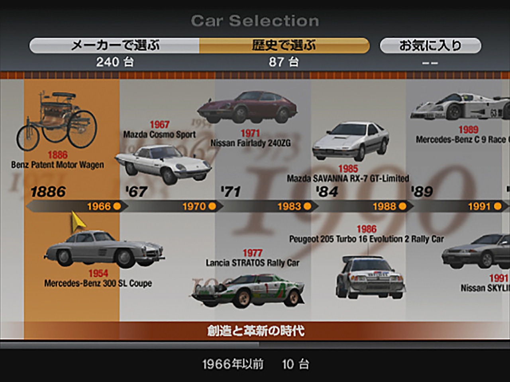
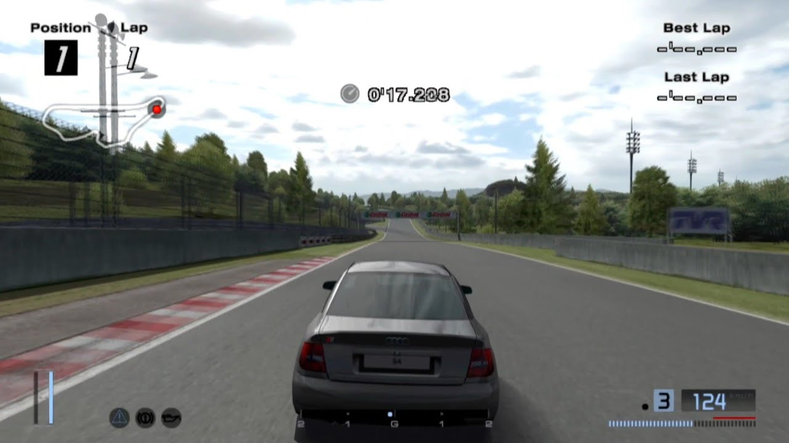
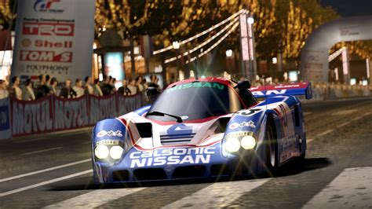

Publishing Info
- Published by: Sony Computer Entertainment Inc.
- Developed by: Polyphony Digital Inc.
- Released: Dec, 2004

Description
Gran Turismo is back and there is a huge variety of cars, including the Model T Ford, Jay Leno's Tank Car, and some of the famous Le Mans cars from down the years.
GT4 has brand new tracks, including the famous Nürburgring, and tracks set in famous locations such as Paris, the Grand Canyon, and many more.
There is a new Photo mode in GT4 where you can take photographs of a saved replays or in photo mode, and save them to your memory card, or a USB storage device.
There is also a new B-Spec mode where become race manager, in other words you let the computer do the work, so it's useful if your doing a endurance race.

Game Categories
- Genre: Racing
- Perspective: 1st-Person/Behind view
- Gameplay: Simulator
- Players: 1-2 Offline, 6 Online

Quote
It's a must-get for any racing fanatic and also a fan of the series! A totally new feel and look which gives way to great racing fun!
https://www.mobygames.com/game/17689/gran-turismo-4/user-review/2455079/